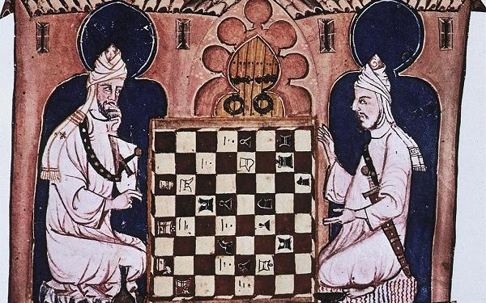

Aqui, o xadrez vai além do tabuleiro
Bem-vindo ao Xeque na Mente! Aqui, o xadrez vai além do tabuleiro — é um convite para exercitar a mente, desenvolver foco e aprender a pensar como um verdadeiro estrategista. Esta página é o seu primeiro movimento rumo a um novo jeito de enxergar os desafios, combinando conceitos básicos do jogo com reflexões que estimulam o raciocínio e a paciência. Prepare-se para dominar o jogo... começando por dentro!
Um pouco da história
O xadrez tem uma trajetória fascinante que começa por volta do século VI, na Índia, com um jogo chamado chaturanga, considerado seu ancestral direto. A partir dali, ele se espalhou pelo mundo islâmico como shatranj, até chegar à Europa medieval, onde passou por diversas transformações.
Foi no século XV que o jogo ganhou fôlego: surgiram as regras modernas que conhecemos hoje — como o movimento poderoso da dama (ou rainha), que antes era uma peça bem mais limitada. Essa mudança, por sinal, foi tão significativa que os historiadores a chamam de Revolução do Xadrez. Durante o século XIX, o xadrez se organizou como esporte: surgiram os primeiros torneios internacionais e, em 1886, foi disputado o primeiro Campeonato Mundial de Xadrez, vencido por Wilhelm Steinitz.
Hoje, o xadrez é jogado por milhões de pessoas ao redor do mundo, tanto em tabuleiros físicos quanto em plataformas online. É mais do que um jogo: é uma linguagem universal de estratégia, paciência e visão de longo prazo — um verdadeiro treino mental com séculos de história nas costas.
Objetivo do jogo
O grande objetivo no xadrez é dar o temido xeque-mate — quando o rei do adversário é colocado sob ataque direto e não há mais como escapar. Mas chegar lá não é só uma questão de atacar: é preciso construir planos, prever jogadas e tomar decisões inteligentes a cada movimento.
Cada partida é como uma batalha silenciosa entre duas mentes. Ganha quem conseguir pensar com calma, enxergar além da jogada atual e adaptar sua estratégia ao longo do jogo. É por isso que, mais do que vencer, jogar bem xadrez é aprender a dominar o tempo, os padrões e a si mesmo.

As peças e seus movimentos
- Peão: Move-se para frente, captura na diagonal.
- Torre: Move-se em linhas retas (horizontal e vertical).
- Cavalo: Movimento em "L", pula peças.
- Bispo: Move-se na diagonal.
- Rainha: Move-se em todas as direções.
- Rei: Move-se uma casa em qualquer direção.
Dicas mentais para iniciantes
- Pense antes de mover: cada peça tem valor e função.
- Observe o tabuleiro inteiro, não só sua jogada.
- Aprenda a perder: todo xeque-mate ensina algo.
- Respire fundo: o xadrez é tão mental quanto estratégico.